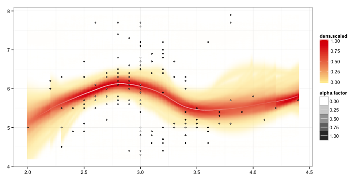

sorvi v0.7.12
Finnish open government data toolkit for R
This R package provides miscellaneous tools for Finnish open government data to complement other rOpenGov packages with a more specific scope. We also maintain a todo list of further data sources to be added; your contributions and bug reports and other feedback are welcome! For further information, see the home page.
Available data sources and tools
Installation (Asennus)
Finnish provinces (Maakuntatason informaatio)
- Basic province information (Area, Population, Population Density)
- Finnish-English province name translations
Finnish municipalities (Kuntatason informaatio)
- Land Survey Finland (Maanmittauslaitos / MML)
- Municipality-Postal code conversions (Kunnat vs. postinumerot)
- Municipality name-ID conversions (Kunnat vs. kuntakoodit)
- Municipality-province conversions (Kunnat vs. maakunnat)
Finnish personal identification number (HETU) (Henkilotunnuksen kasittely)
Visualization tools (Visualisointirutiineja)
Installation
We assume you have installed R. If you use RStudio, change the default encoding to UTF-8. Linux users should also install CURL.
Install the stable release version in R:
install.packages("sorvi")Test the installation by loading the library:
library(sorvi)We also recommend setting the UTF-8 encoding:
Sys.setlocale(locale="UTF-8") Brief examples of the package tools are provided below. Further examples are available in Louhos-blog and in our Rmarkdown blog.
Province information (Maakunnat)
Basic data
Source: Wikipedia
tab <- get_province_info_wikipedia()
head(tab)## Province PopulationDensity
## 1 Uusimaa 170.4
## 2 Varsinais-Suomi 42.9
## 3 Satakunta 28.8
## 4 Kanta-Häme 32.7
## 5 Pirkanmaa 37.9
## 6 Päijät-Häme 38.9Finnish-English translations
Finnish-English translations for province names (we have not been able to solve all encoding problems yet; solutions welcome!):
translations <- load_sorvi_data("translations")
head(as.matrix(translations))## [,1]
## Ã\u0085land Islands "Ahvenanmaa"
## South Karelia "EtelÃĪ-Karjala"
## Southern Ostrobothnia "EtelÃĪ-Pohjanmaa"
## Southern Savonia "EtelÃĪ-Savo"
## Kainuu "Kainuu"
## Tavastia Proper "Kanta-HÃĪme"Municipality information
Finnish municipality information is available through Statistics Finland (Tilastokeskus; see stafi package) and Land Survey Finland (Maanmittauslaitos). The row names for each data set are harmonized and can be used to match data sets from different sources, as different data sets may carry different versions of certain municipality names.
Land Survey Finland (municipality information)
Source: Maanmittauslaitos, MML.
municipality.info.mml <- get_municipality_info_mml()
print(municipality.info.mml[1:2,])## Kohderyhma Kohdeluokk AVI Maakunta Kunta
## Äänekoski 71 84200 4 13 992
## Ähtäri 71 84200 4 14 989
## AVI_ni1
## Äänekoski Länsi- ja Sisä-Suomen aluehallintovirasto
## Ähtäri Länsi- ja Sisä-Suomen aluehallintovirasto
## AVI_ni2
## Äänekoski Regionförvaltningsverket i Västra och Inre Finland
## Ähtäri Regionförvaltningsverket i Västra och Inre Finland
## Maaku_ni1 Maaku_ni2 Kunta_ni1 Kunta_ni2 Kieli_ni1
## Äänekoski Keski-Suomi Mellersta Finland Äänekoski N_A Suomi
## Ähtäri Etelä-Pohjanmaa Södra Österbotten Ähtäri Etseri Suomi
## Kieli_ni2 AVI.FI Kieli.FI
## Äänekoski N_A Länsi- ja Sisä-Suomen aluehallintovirasto Suomi
## Ähtäri Ruotsi Länsi- ja Sisä-Suomen aluehallintovirasto Suomi
## Maakunta.FI Kunta.FI
## Äänekoski Keski-Suomi Äänekoski
## Ähtäri Etelä-Pohjanmaa ÄhtäriConversions
Postal codes vs. municipalities
Source: Wikipedia. The municipality names are provided also in plain ascii without special characters:
postal.code.table <- get_postal_code_info()
head(postal.code.table)## postal.code municipality municipality.ascii
## 1 07230 Askola Askola
## 2 07500 Askola Askola
## 3 07510 Askola Askola
## 4 07530 Askola Askola
## 5 07580 Askola Askola
## 6 07590 Askola AskolaMunicipality-Province mapping
Map all municipalities to correponding provinces
m2p <- municipality_to_province()
head(m2p) # Just show the first ones## Äänekoski Ähtäri Akaa
## "Keski-Suomi" "Etelä-Pohjanmaa" "Pirkanmaa"
## Alajärvi Alavieska Alavus
## "Etelä-Pohjanmaa" "Pohjois-Pohjanmaa" "Etelä-Pohjanmaa"Map selected municipalities to correponding provinces:
municipality_to_province(c("Helsinki", "Tampere", "Turku")) ## Helsinki Tampere Turku
## "Uusimaa" "Pirkanmaa" "Varsinais-Suomi"Speed up conversion with predefined info table:
m2p <- municipality_to_province(c("Helsinki", "Tampere", "Turku"), municipality.info.mml)
head(m2p)## Helsinki Tampere Turku
## "Uusimaa" "Pirkanmaa" "Varsinais-Suomi"Municipality name-ID conversion
Municipality name to code
convert_municipality_codes(municipalities = c("Turku", "Tampere"))## Turku Tampere
## "853" "837"Municipality codes to names
convert_municipality_codes(ids = c(853, 837))## 853 837
## "Turku" "Tampere"Complete conversion table
municipality_ids <- convert_municipality_codes()
head(municipality_ids) # just show the first entries## id name
## Äänekoski 992 Äänekoski
## Ähtäri 989 Ähtäri
## Akaa 020 Akaa
## Alajärvi 005 Alajärvi
## Alavieska 009 Alavieska
## Alavus 010 AlavusPersonal identification number (HETU)
Extract information from a Finnish personal identification number:
library(sorvi)
hetu("111111-111C")## $hetu
## [1] "111111-111C"
##
## $gender
## [1] "Male"
##
## $personal.number
## [1] 111
##
## $checksum
## [1] "C"
##
## $date
## [1] "1911-11-11"
##
## $day
## [1] 11
##
## $month
## [1] 11
##
## $year
## [1] 1911
##
## $century.char
## [1] "-"
##
## attr(,"class")
## [1] "hetu"Validate Finnish personal identification number:
valid_hetu("010101-0101") # TRUE/FALSE## [1] TRUEVisualization tools
Line fit with confidence smoothers (if any of the required libraries are missing, install them with the install.packages command in R):
library(sorvi)
library(plyr)
library(RColorBrewer)
library(ggplot2)
data(iris)
p <- regression_plot(Sepal.Length ~ Sepal.Width, iris)
print(p)
Licensing and Citations
This work can be freely used, modified and distributed under the Two-clause BSD license.
citation("sorvi")##
## Kindly cite the sorvi R package as follows:
##
## (C) Leo Lahti, Juuso Parkkinen, Joona Lehtomaki, Juuso Haapanen,
## Einari Happonen and Jussi Paananen (rOpenGov 2011-2014). sorvi:
## Finnish open government data toolkit for R. URL:
## http://ropengov.github.com/sorvi
##
## A BibTeX entry for LaTeX users is
##
## @Misc{,
## title = {sorvi: Finnish open government data toolkit for R},
## author = {Leo Lahti and Juuso Parkkinen and Joona Lehtomaki and Juuso Haapanen and Einari Happonen and Jussi Paananen},
## doi = {10.5281/zenodo.10280},
## year = {2011},
## }
##
## Many thanks for all contributors! See:
## http://louhos.github.com/contact.htmlSession info
This vignette was created with
sessionInfo()## R version 3.1.2 (2014-10-31)
## Platform: x86_64-apple-darwin13.4.0 (64-bit)
##
## locale:
## [1] en_US.UTF-8/en_US.UTF-8/en_US.UTF-8/C/en_US.UTF-8/en_US.UTF-8
##
## attached base packages:
## [1] methods stats graphics grDevices utils datasets base
##
## other attached packages:
## [1] RColorBrewer_1.0-5 plyr_1.8.1 sorvi_0.7.12
## [4] reshape_0.8.5 helsinki_0.9.24 RCurl_1.95-4.3
## [7] bitops_1.0-6 ggplot2_1.0.0 rgeos_0.3-4
## [10] maptools_0.8-30 gisfin_0.9.16 rgdal_0.8-16
## [13] raster_2.3-12 sp_1.0-15 fmi_0.1.11
## [16] R6_2.0 knitr_1.8
##
## loaded via a namespace (and not attached):
## [1] boot_1.3-13 coda_0.16-1 colorspace_1.2-4 deldir_0.1-6
## [5] digest_0.6.4 evaluate_0.5.5 foreign_0.8-61 formatR_1.0
## [9] grid_3.1.2 gtable_0.1.2 labeling_0.3 lattice_0.20-29
## [13] LearnBayes_2.15 MASS_7.3-35 Matrix_1.1-4 munsell_0.4.2
## [17] nlme_3.1-118 parallel_3.1.2 proto_0.3-10 Rcpp_0.11.3
## [21] reshape2_1.4 rjson_0.2.14 rwfs_0.1.11 scales_0.2.4
## [25] spdep_0.5-77 splines_3.1.2 stringr_0.6.2 tools_3.1.2
## [29] XML_3.98-1.1